Panduan Umum
Selamat datang di Portal Panduan Kerja Mitra Warehouse Fresh. Halaman ini dirancang sebagai acuan cepat dan praktis bagi seluruh mitra di lapangan untuk memahami setiap tahapan kerja secara terstruktur, mulai dari proses penerimaan barang (inbound), pengelolaan stok (inventory), hingga persiapan pengiriman (outbound). Silakan gunakan menu navigasi di samping kiri untuk mencari modul spesifik sesuai dengan peran Anda, serta pastikan untuk selalu mengikuti urutan instruksi dan standar kualitas yang berlaku demi menjaga kelancaran operasional gudang kita.
Inbound Admin
Fokus pada penerimaan dokumen, pengecekan kualitas barang, pencatatan hasil aktual, serta input data ke sistem WMS.
Aturan Singkat di Lapangan
Ikuti urutan proses
Mulai dari dokumen, pengecekan fisik, pencatatan, lalu input sistem.
Catat hasil aktual
Memastikan jumlah penerimaan di sistem sesuai dengan penerimaan di lembar kerja HO.
Laporkan kendala
Mengarsip dokumen penerimaan dan pencetakan label.
Tugas Admin Inbound secara umum
Secara umum, Admin Inbound bertanggung jawab memastikan seluruh proses penerimaan barang terdokumentasi dengan benar, akurat, dan sesuai SOP.
Vendor melakukan registrasi
Vendor melakukan registrasi ketika tiba di warehouse, kemudian dari tim LP/security merubah status PO dari "On Delivery" menjadi "Arrived".
(Klik untuk lihat contoh gambar)
Pengecekan kelengkapan dokumen dan mempersiapkan lembar kerja HO untuk checker
Pastikan No.PO dengan surat jalan sesuai, kemudian gabungkan dengan lembar kerja HO menjadi satu bagian dan diberikan kepada checker.
(Klik untuk lihat contoh gambar)


Proses pengesahan dokumen penerimaan (GRN)
Pastikan jumlah penerimaan pada sistem sesuai dengan penerimaan aktual. Berikut ini langkah proses GRN (Good Receipt Notes) pada sistem WMS oleh Admin Inbound.
(Klik untuk lihat contoh gambar)


Proses Pencetakan Label barcode
Admin melakukan persiapan dan pencetakan label barcode, memastikan tanggal expired date sesuai dengan ketentuan produk, memastikan SKU Name sesuai dengan produknya .
(Klik untuk lihat contoh gambar)

Inbound Checker
Melakukan perhitungan fisik aktual dan pencatatan pada sistem.
Aturan Singkat di Lapangan
Ikuti urutan proses
Mulai dari dokumen, pengecekan fisik, pencatatan, lalu input sistem.
Catat hasil aktual
Jumlah barang, kondisi barang, dan selisih harus ditulis sesuai temuan.
Laporkan kendala
Jika ada dokumen tidak lengkap, QR tidak terbaca, atau barang rusak, segera eskalasi ke PIC.
Persiapan Aset
Menyiapkan aset yang digunakan seperti keranjang, pallet, seuic, partisi untuk melapisi keranjang
(Klik untuk lihat contoh gambar)
Proses penerimaan
Sebelum dilakukan proses penerimaan oleh Checker Inbound, dilakukan pengecekan suhu mobil dan produk oleh tim QA Inbound
(Klik untuk lihat contoh gambar)
Proses Menghitung oleh Checker Inbound
Checker menghitung jumlah barang yang diterima dengan mengecek kualitas secara visual
(Klik untuk lihat contoh gambar)
Pencatatan pada lembar kerja HO (Hand Over)
Mencatat jumlah produk yang diterima, beri keterangan jika jumlah produk tidak sesuai dengan jumlah pada PO(Purchase Order)
(Klik untuk lihat contoh gambar)
Outbound Picker Sorter
Melakukan pengambilan barang untuk kategori non cross dock dan menyortir barang dengan kategori cross dock
Aturan Singkat di Lapangan
Ikuti urutan proses
Mulai dari penerimaan tugas, mengambil dan menyortir barang, kemudian proses pada sistem WMS (Warehouse Management System).
Proses Pengambilan barang
Picker melakukan pengambilan barang pada area penyimpanan seperti chiller, anteroom, area pasar, Sorter mengambil barang pada area penyimpanan sementara di staging inbound
Laporkan kendala
Jika barang tidak ditemukan atau selisih, silahkan hubungi Inventory Stock Keeper untuk barang non cross dock, atau hubungi Team Leader untuk barang cross dock.
Persiapan Aset
Menyiapkan aset yang digunakan seperti keranjang, pallet, seuic,dll
(Klik untuk lihat contoh gambar)
Penerimaan penugasan (Picker Sorter)
Team leader melakukan penugasan dengan memberi label QR code SO yang perlu diselesaikan
(Klik untuk lihat contoh gambar)
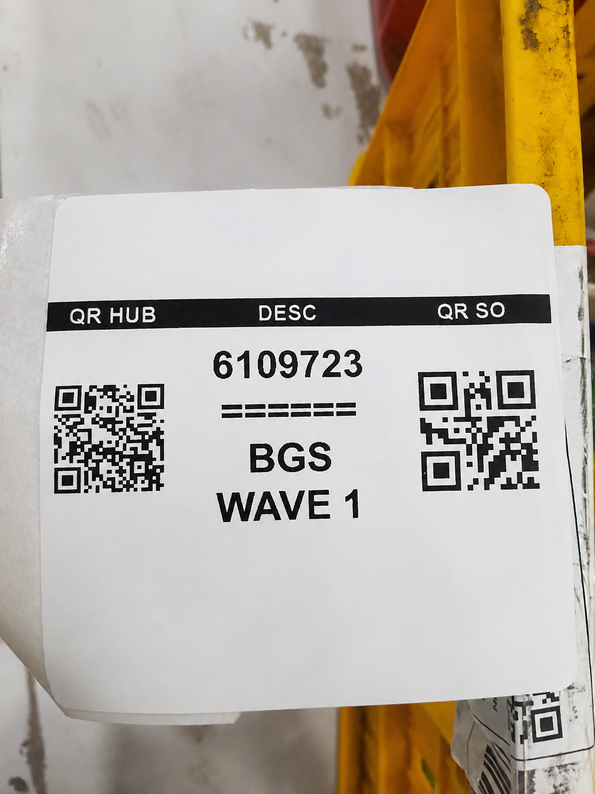
Penempelan QR code label penugasan pada keranjang
Menempelkan QR code label penugasan pada keranjang sebagai identitas barang sesuai nomor SO (Supply Order).
(Klik untuk lihat contoh gambar)
Proses pengambilan barang (Picker)
Picker mengambil barang di area penyimpanan pada SLOC yang tertera pada sistem. pada saat proses pengambilan cek detail yang tertera pada QR code barang seperti : Nama SKU, Garamasi, dan Expired Date
(Klik untuk lihat contoh gambar)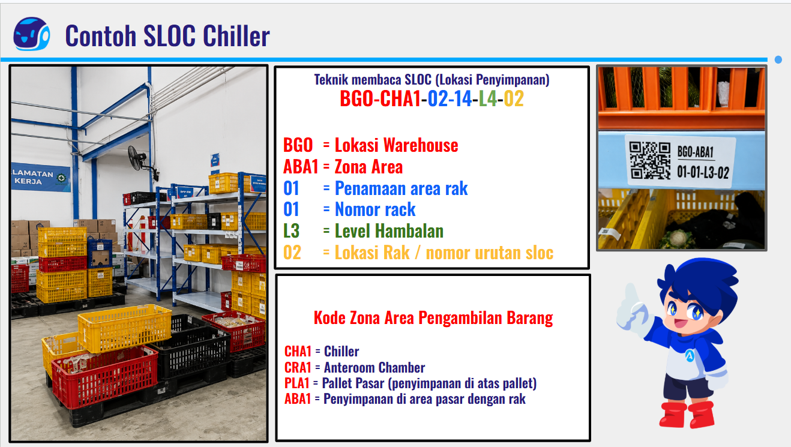

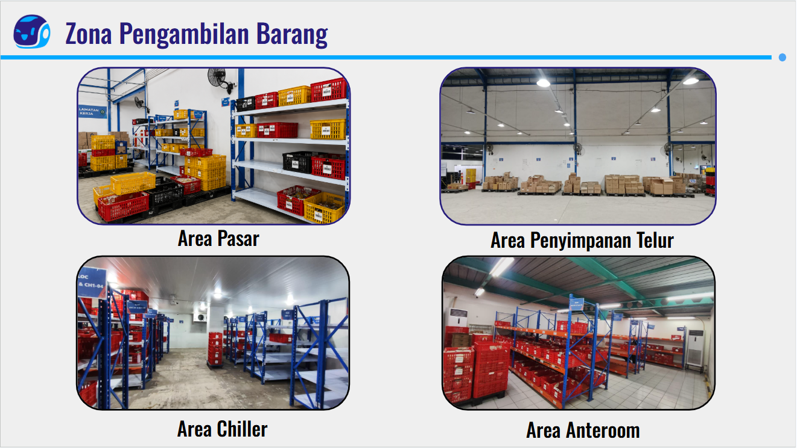

Proses pengambilan barang pada sistem (Picker)
Proses pengambilan barang pada sistem WMS (Warehouse Management System), dengan melakukan scan pada QR code barang dan QR code SLOC
(Klik untuk lihat contoh gambar)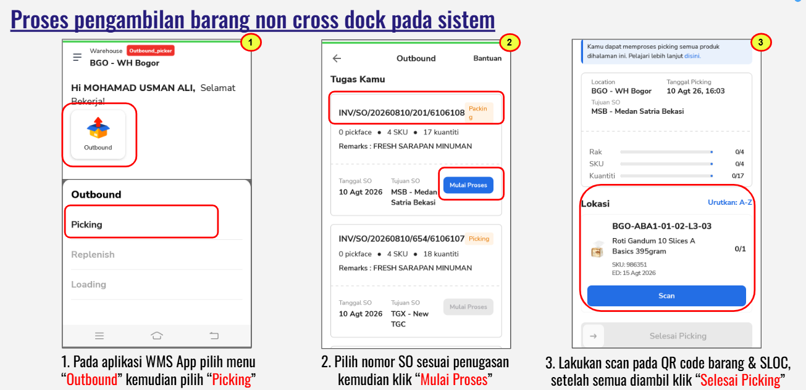
Proses menyortir barang (Sorter)
Sorter mengambil barang dengan jumlah yang banyak per SKU, kemudian menyortir berdasarka jumlah permintaan masing-masing HUB.
(Klik untuk lihat contoh gambar)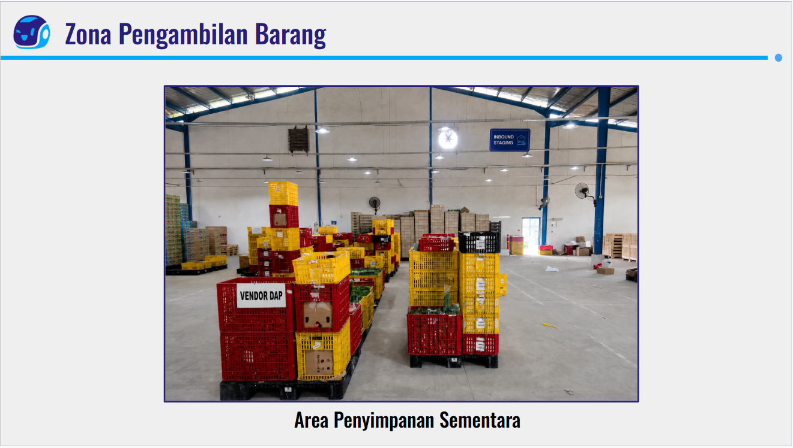

Proses sistem untuk menyortir (Sorter)
Proses meenyortir barang pada sistem WMS (Warehouse Management System), dengan melakukan scan pada QR code barang dan QR code HUB tujuan yang tertera pada label penugasan dan memproses pada sistem WMS (Warehouse Management System).
(Klik untuk lihat contoh gambar)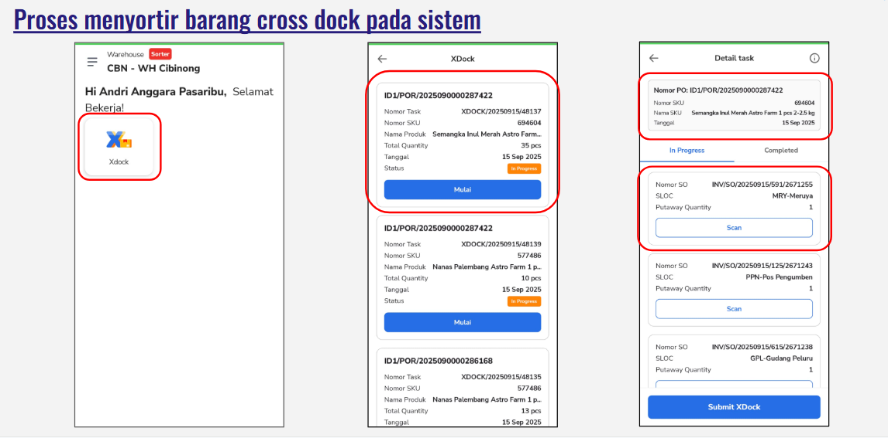
Serah terima ke Outbound Checker
Barang yang telah diambil maupun disortir kemudian diserah terima ke bagian Outbound Checker untuk proses pengecekan dan pengemasan.
(Klik untuk lihat contoh gambar)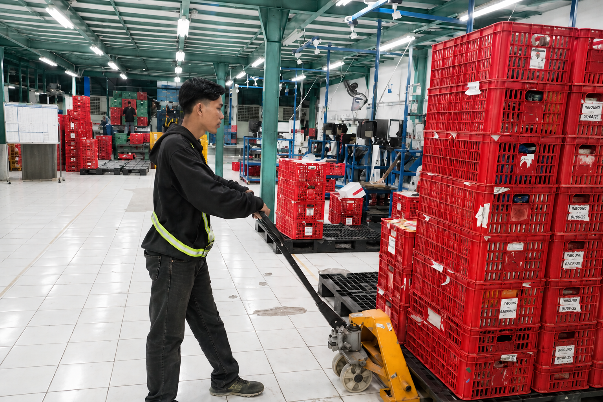
Outbound Checker
Melakukan pengecekan dan pengemasan barang untuk dikirim ke HUB
Aturan Singkat di Lapangan
Ikuti urutan proses
Mulai dari cetak koli ID, pengecekan barang, hingga penyusunan dan pengemasan barang.
Proses Pengecekan dan pengemasan barang
Checker melakukan pengecekan barang dengan jumlah yang tertera pada SO (Supply Order) kemudian menyusun dan mengemas barang sesuai ketentuan dengan memperhatikan berat dan karakterisitik dari suatu barang
Laporkan kendala
Jika ditemukan barang dengan keadaan bad atau jumlah barang tidak sesuai, namun tidak ada stok penggantinya, segera konfirmasi ke Team Leader.
Persiapan Aset
Menyiapkan aset yang digunakan oleh Outbound Checker
(Klik untuk lihat contoh gambar)
Mencetak dan scan Koli ID
Checker mencetak koli ID kemudian melakukan scan pada koli ID tersebut untuk memulai dan merekam proses checking
Note : untuk menghentikan proses merekam, Checker melakukan scan koli ID di akhir sesi pengecekan
(Klik untuk lihat contoh gambar)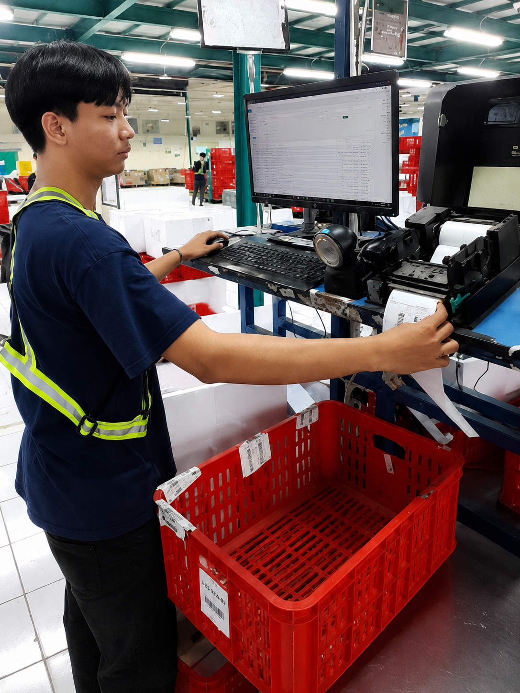
Proses pengecekan barang
Checker melakukan scan QR code barang untuk menghitung dan melakukan proses pengecekan
Note : Scan dilakukan satu per satu, untuk barang berupa telur diberi toleransi untuk proses ketik jumlah secara manual namun tetap dihitung
(Klik untuk lihat contoh gambar)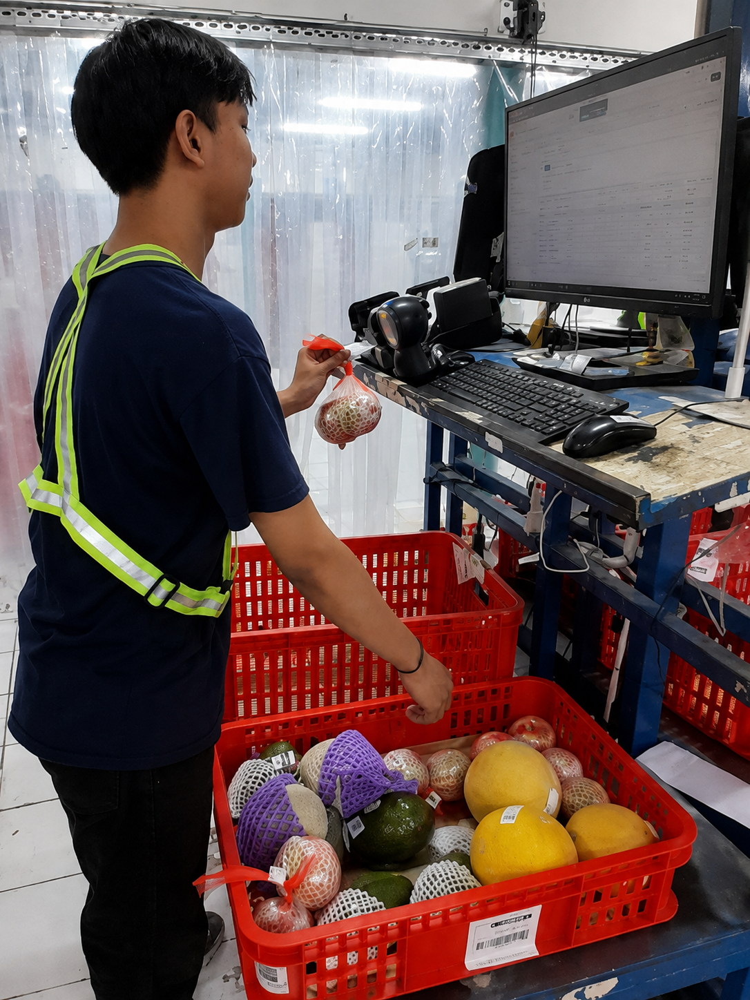
Penyusunan dan pengemasan barang
Barang disusun sesuai karakteristik barang, berikut ketentuannya
• Barang dengan karakteristik Berat / besar, padat, kokoh, diletakkan pada bagian paling bawah (Contoh : Semangka, labu parang)
• Barang dengan karakterisitik Berat sedang, sedikit rentan, diletakkan pada bagian tengah (Contoh : Brokoli, mentimun)
• Barang dengan karakteristik Ringan / kecil, sangat rentan, diletakkan pada bagian paling atas (Contoh : Sayuran daun seperti bayam , kangkung, selada keriting)
• Penempatan barang dengan berat sedang disesuaikan dengan karakteristik barang lainnya. Jika berdampingan dengan barang yang lebih berat, tempatkan di posisi tengah. Jika berdampingan dengan barang yang lebih ringan, tempatkan di posisi bawah
(Klik untuk lihat contoh gambar)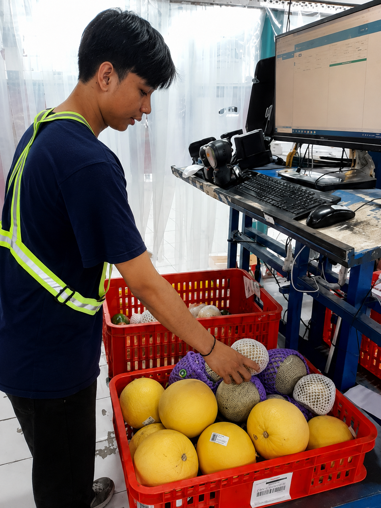
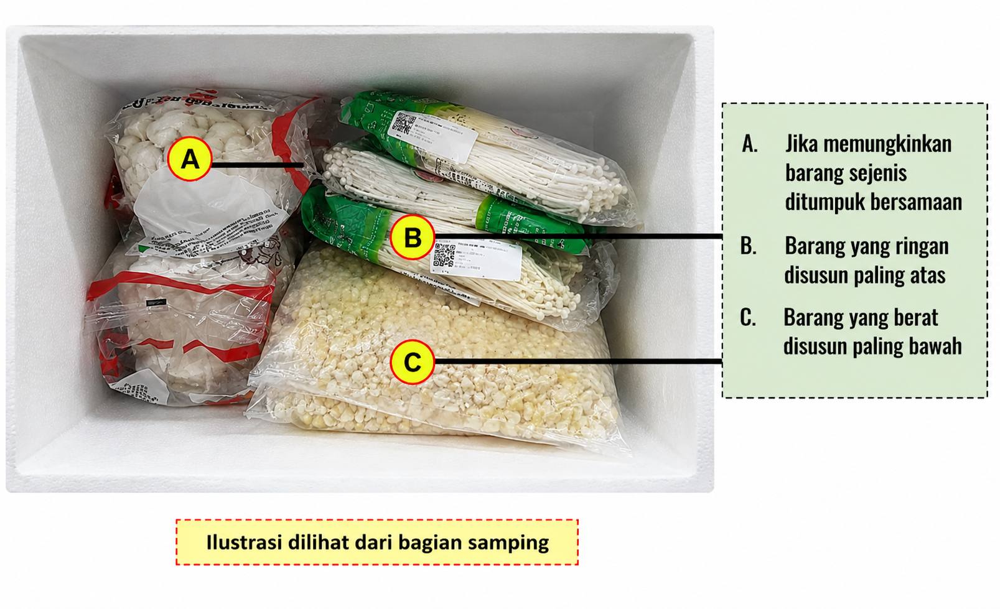
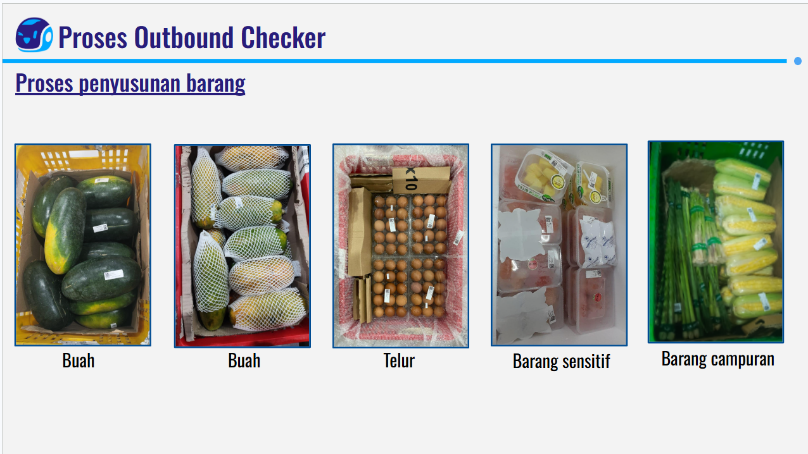
Hal yang perlu diperhatikan checker
Catatan :
• Pastikan 1 permintaan pesanan tidak digabungkan dengan permintaan pesanan lain
• Pastikan dalam 1 koli tidak ada ruang kosong dan terisi penuh
• Beri partisi berupa kardus atau bubble wrap pada barang tertentu
• Tambahkan ice gel pada produk rentan dan pengemasan menggunakan styrofoam
• Lepaskan label koli ID yang lama
• Tempelkan label koli ID yang baru tanpa menutupi label tagging asset
• Jika dalam satu SO terdapat >1 keranjang, maka cetak koli ID sebanyak keranjang yang digunakan dengan nomor koli ID yang berbeda
• Pastikan label koli ID terpasang dengan baik dan benar
Serah terima ke Outbound Loader
Barang yang telah selesai pengecekan dan pengemasn kemudian di serah terima ke Outbound Loader untuk proses grouping
(Klik untuk lihat contoh gambar)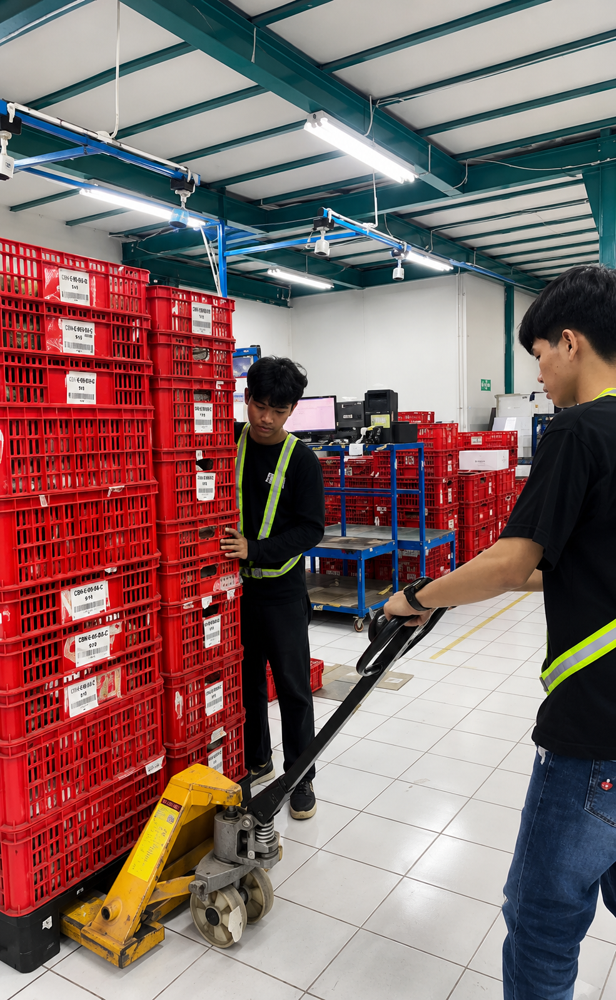
Contoh temuan kasus
Temuan kasus yang sering terjadi pada proses pengecekan barang
(Klik untuk lihat contoh gambar)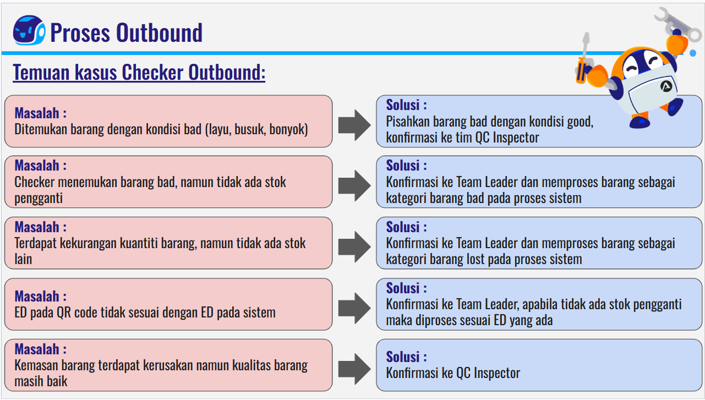
Inbound Labeling
Panduan operasional untuk Inbound Labeling.
Inventory Admin
Panduan operasional untuk Inventory Admin.
Inventory Badstock Admin
Panduan operasional untuk Inventory Badstock Admin.
Inventory Putaway
Panduan operasional untuk Inventory Putaway.
Inventory Stock Keeper
Panduan operasional untuk Inventory Stock Keeper.
Inventory Badstock
Panduan operasional untuk Inventory Badstock.
Outbound Picker Sorter
Melakukan pengambilan barang di rak penyimpanan dan memilahnya berdasarkan rute/hub pengiriman.
Outbound Checker
Panduan operasional untuk Outbound Checker.
Outbound Loader
Panduan operasional untuk Outbound Loader.